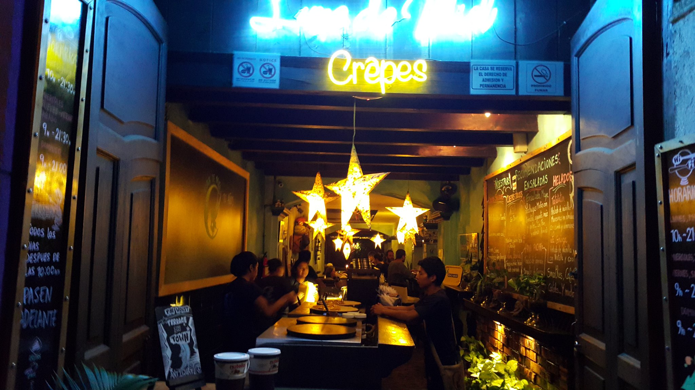

Luna de Miel
Short Summary
This place is really delicious. It has lots of different types
of Crêpes That are so delicious. Everytime we go with my wife
we enjoy it so much. It's also outside so if you like an open restaurnt
then you've come to the right place.
How expensive is it? 💲💲 - 💲💲💲
Pros.
- Lots of different Crêpes. You can either have it sweet or
normal. For example, a normal one is with mozzerella chicken
and mushrooms or a sweet one would be a unicron style Crêpe.
- They serve you fast and they attend you fast.
- They also have specitaly drinks from their restaurnt.
Cons.
- Only 1 restaurnt. It's only in Antigua, too.
- You have to pay the drink sepreatly just like every restaurnt.
- Sometimes and only sometimes do they really have long wait times.
